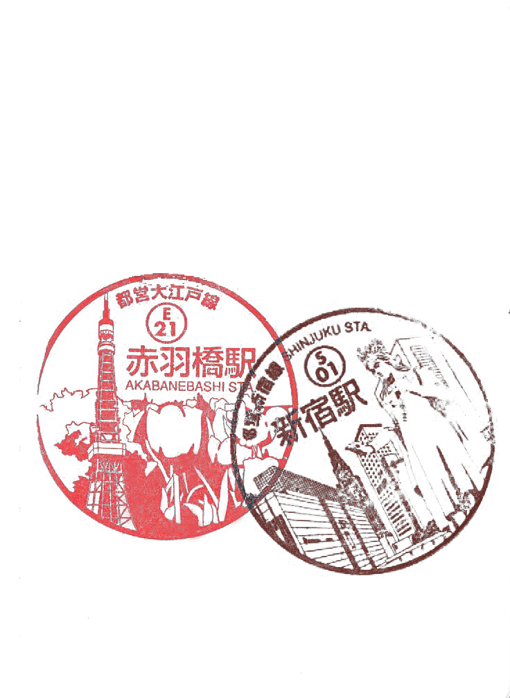

VISITAS
Tokio es una ciudad llena de contrastes, donde cada barrio tiene una personalidad propia y cada rincón guarda una sorpresa. Desde templos ancestrales hasta avenidas iluminadas por neones, la capital japonesa ofrece una mezcla única de tradición y modernidad. Estos son algunos de los lugares que no puedes perderte si quieres sentir la esencia auténtica de Tokio.


Senso-ji (Asakusa)
El templo más antiguo y visitado de Tokio, fundado en el año 628. La imponente puerta Kaminarimon da paso a la calle Nakamise, llena de tiendas tradicionales. Un lugar donde la historia se palpa en cada piedra.

Cruce de Shibuya
El cruce peatonal más famoso del mundo. Miles de personas lo atraviesan cada hora entre neones, pantallas gigantes y el ritmo frenético de la ciudad. Es la mejor forma de sentir la energía pura de Tokio.

Santuario Meiji
Un remanso de paz en pleno corazón de la ciudad, rodeado de un frondoso bosque artificial. Dedicado al emperador Meiji, es uno de los santuarios sintoístas más importantes de Japón.

Torre de Tokio
Icono inconfundible del skyline de Tokio, inspirada en la Torre Eiffel pero pintada de naranja y blanco. Desde su mirador se obtienen vistas espectaculares de toda la ciudad y, en días despejados, del Monte Fuji.

Shinjuku
El barrio más animado de Tokio. De día, rascacielos de cristal y los famosos jardines Gyoen. De noche, el Kabukichō llena las calles de luces de neón, izakayas y entretenimiento sin límite.

Harajuku
Epicentro de la moda alternativa y la cultura pop japonesa. La calle Takeshita es famosa por sus tiendas únicas, crepes coloridos y la explosiva subcultura kawaii que ha conquistado el mundo entero.

Asakusa
El barrio más tradicional de Tokio, donde el Japón antiguo sobrevive entre calles adoquinadas, tiendas de artesanía y rickshaws. Perfecto para entender cómo era la ciudad antes de la modernidad.

Akihabara
El paraíso de la tecnología, el anime y la cultura otaku. Tiendas de electrónica apiladas en varios pisos, figuras coleccionables, maid cafés y arcades que te transportan a un universo completamente diferente.

Parque Ueno
El parque más famoso de Tokio, especialmente durante la floración del sakura. Alberga también el zoo más antiguo de Japón y varios museos nacionales que merecen una visita.

Jardines Shinjuku Gyoen
Un refugio verde en medio del caos urbano. Más de 1.000 cerezos hacen de este jardín uno de los mejores lugares para el hanami en toda la ciudad. Abierto durante todo el año con paisajes cambiantes.

Monte Fuji (excursión)
A solo 100 km de Tokio, el símbolo por excelencia de Japón. Se puede visitar en una excursión de día desde la capital. El lago Kawaguchiko ofrece las vistas más fotogénicas del volcán sagrado.

Odaiba
Isla artificial en la Bahía de Tokio con vistas al Rainbow Bridge y el skyline de la ciudad. Combina centros comerciales futuristas, playas artificiales y museos interactivos en un entorno único.